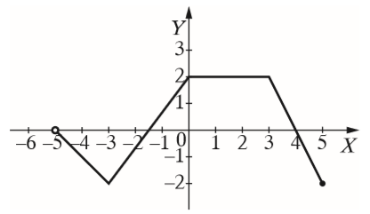
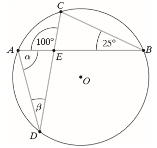
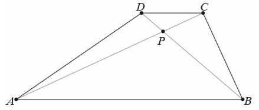
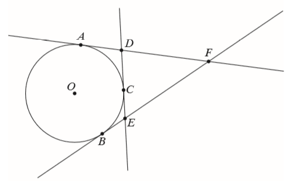

Matura 2018 listopad
Na tej stronie znajdują się rozwiązania zadań z
matury próbnej Wydawnictwa Operon. Arkusz dostępny jest na stronie wydawnictwa: https://www.operon.pl/Oferta/Egzaminy/Matura-z-Operonem/Baza-arkuszy.
Wynikiem działania \(49^{-6}:7^{-15}\) jest:
A.\( 7^{-21} \)
B.\( 7^3 \)
C.\( 7^8 \)
D.\( 7^{-27} \)
B
Wyrażenie \(\log_3(\log 30-\log 3)\) jest równe:
A.\( \log_310 \)
B.\( 0 \)
C.\( 1 \)
D.\( 3 \)
B
Liczbą odwrotną do liczby \(\frac{\sqrt{6}-3}{3}\) jest:
A.\( \frac{3-\sqrt{6}}{3} \)
B.\( -\sqrt{6}-3 \)
C.\( 3+\sqrt{6} \)
D.\( \frac{\sqrt{6}+3}{5} \)
B
Urząd skarbowy został zobowiązany do zwrotu podatku w wysokości \(235{,}40\) zł.
Kwotę tę zaokrąglono do pełnych dziesiątek złotych. Błąd względny tego zaokrąglenia wyrażony w
procentach wyniósł około:
A.\( 0{,}04\% \)
B.\( 1{,}95\% \)
C.\( 1{,}92\% \)
D.\( 2{,}29\% \)
B
Liczba \(2-2(\sqrt{3}-1)^2\):
A.należy do przedziału \( \langle 1;\infty ) \)
B.jest ujemna
C.jest równa \( 0 \)
D.należy do przedziału \( (0;1) \)
D
Nierówność \(\frac{1}{3}-\frac{1}{2}x\lt \frac{1}{6}\) jest równoważna nierówności:
A.\( x\gt \frac{1}{3} \)
B.\( x\lt \frac{1}{3} \)
C.\( x\gt 3 \)
D.\( x\lt 3 \)
A
Liczba różnych rozwiązań równania \(\frac{3x(x^2-9)}{x-3}=0\) wynosi:
A.\( 4 \)
B.\( 3 \)
C.\( 2 \)
D.\( 1 \)
C
Na rysunku przedstawiono wykres pewnej funkcji \(f\). Maksymalny przedział, w
którym funkcja \(f\) jest rosnąca, to: 
A.\( \langle -2;0 \rangle \)
B.\( \langle -2;2 \rangle \)
C.\( \langle -3;2 \rangle \)
D.\( \langle -3;0 \rangle \)
D
Wykres funkcji liniowej \(f(x)=\frac{8-3x}{2}\) przecina osie układu współrzędnych
w punktach \(A\) i \(B\). Pole trójkąta \(ABO\), w którym punkt \(O\) jest początkiem układu
współrzędnych, wynosi:
A.\( 10\frac{2}{3} \)
B.\( 5\frac{1}{3} \)
C.\( 21\frac{1}{3} \)
D.\( 7\frac{1}{2} \)
B
Zbiorem wartości funkcji \(f(x)=-(x+7)(x-3)\) jest:
A.\( (-\infty ;25\rangle \)
B.\( (-\infty ;-2\rangle \)
C.\( \langle 25;+\infty ) \)
D.\( (-\infty ;2\frac{1}{2}\rangle \)
A
Wykres funkcji \(f(x)=-3^x\) przesunięto równolegle wzdłuż osi \(OX\) o dwie
jednostki w prawo i otrzymano wykres funkcji \(y=g(x)\). Wówczas:
A.\( g(x)=-3^x+2 \)
B.\( g(x)=-3^{x+2} \)
C.\( g(x)=-3^x-2 \)
D.\( g(x)=-3^{x-2} \)
D
Dodatnich wyrazów ciągu określonego wzorem \(a_n=-2n+2018\) dla \(n\ge 1\) jest:
A.nieskończenie wiele
B.\( 1009 \)
C.\( 1008 \)
D.\( 2016 \)
C
Sumę \(n\) początkowych wyrazów ciągu \((4, 6, 9,...)\) można obliczyć ze wzoru:
A.\( n(n+3) \)
B.\( \frac{3n+5}{2}\cdot n \)
C.\( 8\left[\left(\frac{3}{2}\right)^n-1\right] \)
D.\( 2\left[\left(\frac{3}{2}\right)^n-1\right] \)
C
W pewnym ciągu arytmetycznym suma dwóch pierwszych wyrazów jest równa
\(5\frac{1}{2}\), a suma trzech pierwszych wyrazów jest równa \(12\). Pierwszy wyraz tego ciągu jest
równy:
A.\( 1\frac{1}{2} \)
B.\( 4\frac{1}{2} \)
C.\( -\frac{1}{2} \)
D.\( 1 \)
A
Dla pewnego kąta wypukłego \(\alpha\) mamy \(\operatorname{tg} \frac{\alpha
}{3}=\frac{\sqrt{3}}{3}\). Kąt \(\alpha \) ma miarę:
A.\( 210^\circ \)
B.\( 60^\circ \)
C.\( 90^\circ \)
D.\( 120^\circ \)
C
Wysokość rombu jest równa \(12\), a jego pole jest równe \(180\). Sinus kąta
ostrego rombu wynosi:
A.\( 0{,}4 \)
B.\( 0{,}6 \)
C.\( 0{,}75 \)
D.\( 0{,}8 \)
D
Punkty \(A\), \(B\), \(C\) i \(D\) należą do okręgu o środku w punkcie \(O\) (patrz
rys.). Suma \(\alpha +\beta \) wynosi: 
A.\( 125^\circ \)
B.\( 120^\circ \)
C.\( 100^\circ \)
D.\( 90^\circ \)
C
Obserwowana w laboratorium populacja bakterii podwaja swoją liczebność co \(20\)
minut. Początkowa liczba bakterii wynosiła \(K\) sztuk. Oznacza to, że po upływie \(n\) godzin
liczebność populacji wyniesie:
A.\( K\cdot 2^{3n} \)
B.\( K\cdot 6^n \)
C.\( K^{3n} \)
D.\( K\cdot 3n\)
A
Przeciwległe wierzchołki kwadratu mają współrzędne \(A=(1,-3)\) i \(C=(-5,3)\). Bok
kwadratu ma długość:
A.\( 12 \)
B.\( 6\sqrt{2} \)
C.\( 3\sqrt{2} \)
D.\( 6 \)
D
Ilość wszystkich liczb czterocyfrowych, w których cyfry się nie powtarzają, wynosi:
A.\( 9\cdot 9 \cdot 8 \cdot 7 \)
B.\( 10\cdot9\cdot8\cdot7 \)
C.\( 9\cdot10\cdot10\cdot10 \)
D.\( 9\cdot8\cdot7\cdot6 \)
A
Rzucono trzy razy monetą symetryczną. Prawdopodobieństwo uzyskania jednej reszki
wynosi:
A.\( \frac{1}{2} \)
B.\( \frac{3}{8} \)
C.\( \frac{7}{8} \)
D.\( \frac{1}{8} \)
B
Średnia arytmetyczna zestawu liczb \(5, 8, 1, 3, x, 8 \) wynosi \(6\). Mediana tego
zestawu jest równa:
A.\( 2 \)
B.\( 6\frac{1}{2} \)
C.\( 4 \)
D.\( 8 \)
B
Na rysunku przedstawiono graniastosłup prawidłowy czworokątny o krawędzi podstawy
równej \(4\). Graniastosłup ten przecięto płaszczyzną przechodzącą przez przekątną \(BD\) podstawy i
wierzchołek \(C’\). Otrzymany przekrój jest trójkątem, którego wysokość poprowadzona z wierzchołka
\(C’\) jest równa \(12\). Wysokość graniastosłupa jest równa: 
A.\( 2\sqrt{35} \)
B.\( 4\sqrt{7} \)
C.\( 2\sqrt{34} \)
D.\( 8\sqrt{2} \)
C
Kula o promieniu \(6\) cm i walec o wysokości równej \(4{,}5\) cm mają równe
objętości. Średnica podstawy walca ma długość:
A.\( 8 \) cm
B.\( 8\sqrt{2} \) cm
C.\( 16 \) cm
D.\( 20 \) cm
C
Rozwiąż nierówność \((2x-5)(3-x) \gt -66\).
\(x\in (-3;\frac{17}{2})\)
W trapezie \(ABCD\) przekątne przecinają się w punkcie \(P\). Punkt \(P\) dzieli
przekątne na odcinki długości: \(|AP|=8\), \(|PC|=3\) i \(|BP|=12\). Długości podstaw \(AB\) i
\(CD\) trapezu różnią się o \(15\). Oblicz długość odcinka \(DP\) oraz długości podstaw \(AB\) i
\(CD\) trapezu. 
\(|DP|=4{,}5; |CD|=9; |AB|=24\)
Wykaż, że jeżeli liczby \(a\) i \(b\) są kolejnymi liczbami naturalnymi, to liczba
\(\left(a+\frac{1}{2}b\right)^2-\left(a-\frac{1}{2}b\right)^2\) jest podzielna przez \(4\).
Wiedząc, że kąt \(\alpha\) jest rozwarty oraz \(\sin^{2} \alpha =\frac{9}{25}\),
oblicz \(\operatorname{tg} \alpha \).
\(\operatorname{tg} \alpha =-\frac{3}{4}\)
Dana jest funkcja \(f(x)=-3x^2+bx+c\) dla \(x\in \mathbb{R} \). Prosta o równaniu
\(x=2\) jest osią symetrii paraboli będącej jej wykresem, a zbiorem wartości funkcji \(f\) jest
przedział \((-\infty ;21\rangle \). Wyznacz współczynniki \(b\) i \(c\).
\(b=12, c=9\)
Do okręgu o środku w punkcie \(O\) poprowadzono z trzech punktów \(A\), \(B\) i
\(C\) leżących na okręgu styczne, które przecięły się w punktach \(D\), \(E\) i \(F\) (zobacz
rysunek). Wykaż, że jeżeli \(|AF|=x\), to obwód trójkąta \(DEF\) jest równy \(2x\). 
Spośród wszystkich wierzchołków sześciokąta foremnego o krawędzi \(1\) losujemy
dowolne dwa. Oblicz prawdopodobieństwo tego, że wylosowane wierzchołki utworzą odcinek, którego
długość jest liczbą niewymierną.
\(\frac{2}{5}\)
Dany jest skończony, pięciowyrazowy ciąg \((4a-5; a; b; b+2; 9)\). Trzy pierwsze
wyrazy tego ciągu są trzema kolejnymi wyrazami ciągu arytmetycznego, a trzy ostatnie są trzema
kolejnymi wyrazami ciągu geometrycznego. Oblicz \(a\) i \(b\).
\(a=2, b=1\) lub \(a=\frac{1}{2}, b=4\)
Dany jest trójkąt \(ABC\), w którym \(A=(-9,8)\). Bok \(BC\) tego trójkąta zawiera
się w prostej o równaniu \(y=-2x+38\). Prosta zawierająca wysokość tego trójkąta poprowadzona z
wierzchołka \(B\) ma równanie \(3x+2y-61=0\). Wyznacz współrzędne wierzchołków \(B\) i \(C\) oraz
napisz równanie prostej zawierającej wysokość trójkąta poprowadzoną z wierzchołka \(C\).
\(B=(15,8), C=(9,20)\)
prosta \(CD: x=9\)
prosta \(CD: x=9\)
W ostrosłupie prawidłowym trójkątnym krawędź boczna jest trzy razy dłuższa od
wysokości ostrosłupa. Krawędź podstawy ma długość \(12\). Oblicz objętość i pole powierzchni bocznej
tego ostrosłupa.
\(V=36\sqrt{2}\)
\(P_b=54\sqrt{2}\)
\(P_b=54\sqrt{2}\)